Muser
Find your next song.
Millions of songs.
Same three playlists.
Judging a song is slow.
Friends' taste is hidden.
Sharing a song means leaving the app, and the link gets buried.
We borrowed what already works.


Discovery, friends and listening in one app.
Three listeners.
Linh, 20
Student. Wants two or three new songs a day, without effort.
Swipe deck · Familiar BarMinh, 22
Sharer. Wants friends to see what he likes, and react.
Friends deck · heartsAn, 21
Private listener. Shares only in chosen periods.
Privacy switchRequirements and targets.
functional requirements
29 Must · 8 Should · 2 Could
API reads, p95
swipe card on mid-range Android
first audio after play
What the research says.
of 18–24-year-olds find music through social media
find it through friends and family
listeners want different amounts of unfamiliar music
Who else is out there?
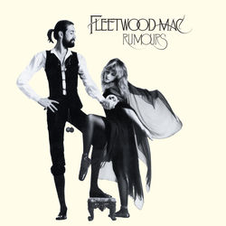
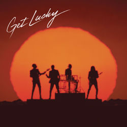
Big streaming
Great playlists. Little control over how new.
Swipe apps
Fast to decide. No friends, no novelty dial.
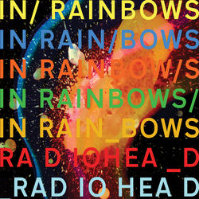
Weird Fishes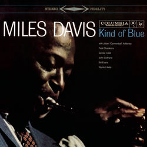
So WhatFriend-sharing apps
See what friends play. No swipe, no off switch.
The gap we fill.
Swipe.
One gesture: keep or skip.
A like is also a share.
Liked 0
drag the card
Every swipe starts at the hook.
Other screens (player, library, search) start at 0:00.
The swipe deck jumps straight to the chorus. No intro to wait through.
Familiar Bar.
How far outside your usual?
Close to your taste.
Changing mode never pauses the music.
A friend's pick. A heart back.
tap the heart
Privacy is one switch.
Off by default. Nobody sees your likes.
click the switch
And a place to listen.
Audio keeps playing across tabs.
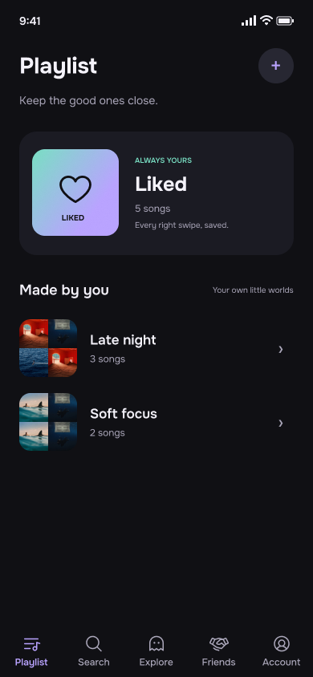
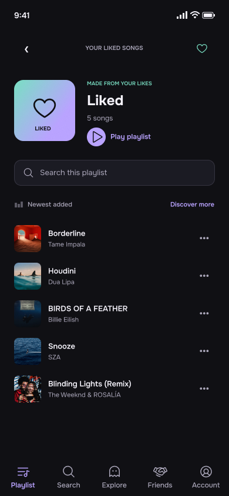
Architecture.
/v1Only exception: the app listens directly to its own Activity feed
Clean layers, both sides.
Backend modules
Mobile app
One swipe, step by step.
PUT /v1/me/likes/:songId + tokenThe privacy epoch.
visible = sharing on ∧ share.epoch = user.shareEpochclick the switch
Safe by design.
Retries are safe
A like or heart repeated creates no duplicate.
Private stays private
Someone else's data returns 404, not 403, so existence isn't leaked.
Token on every call
Identity comes only from the verified token, never the request body.
The app, in three screens.
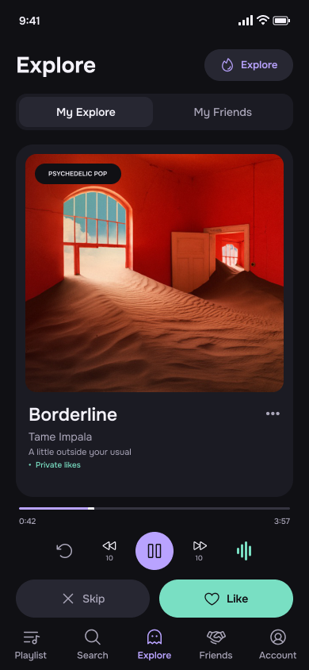
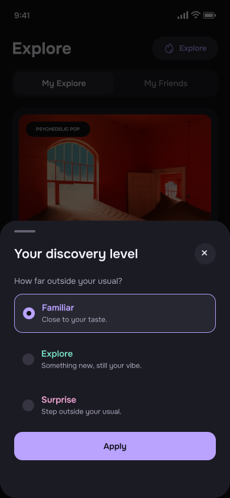
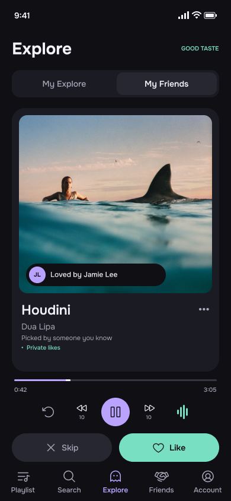
Friends and privacy.
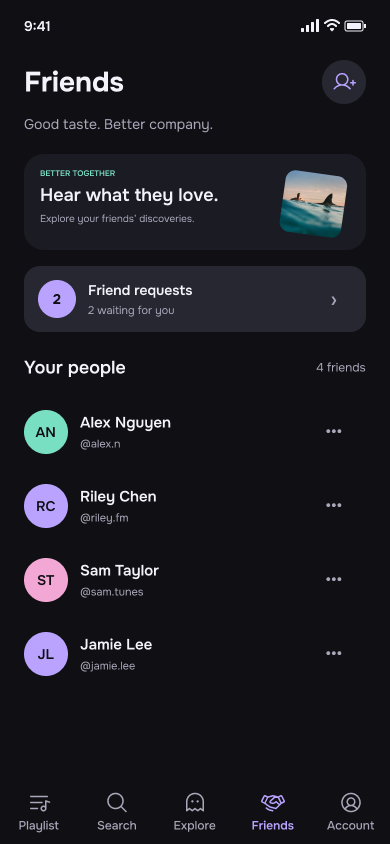
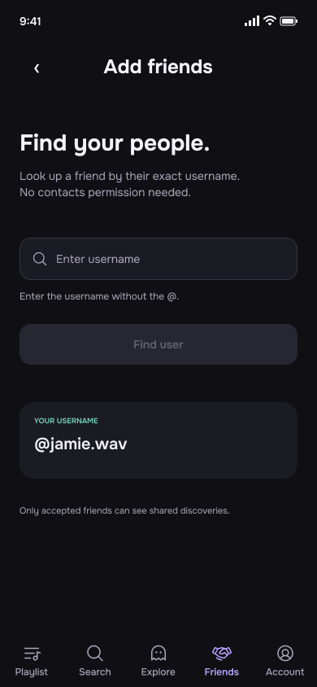
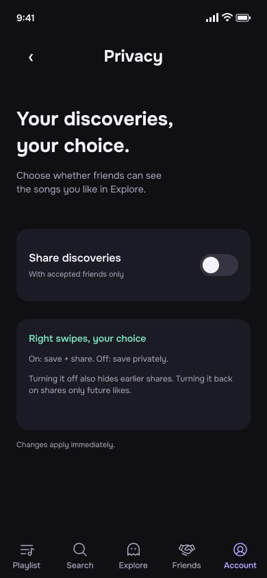
Never a blank screen.
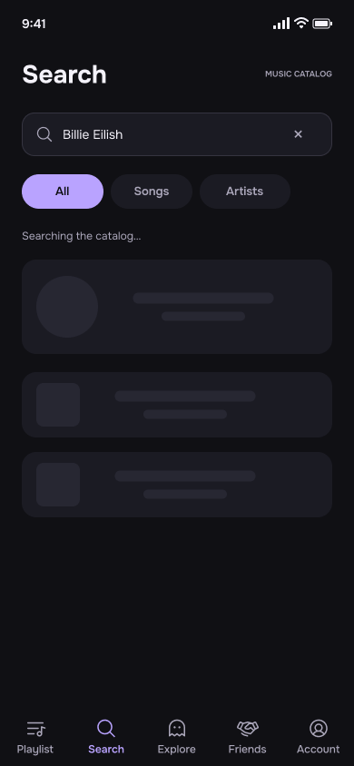
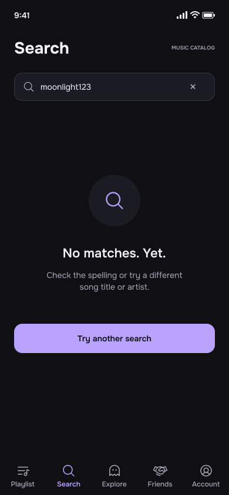
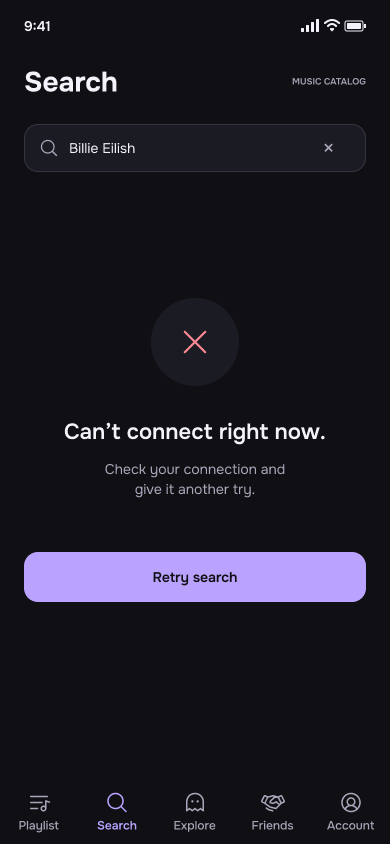
Where we are: built.
Music
Full songs, played to the end, streamed from our own storage. Never downloadable.
Copyright
Only cleared, licensed tracks enter the catalog. The app never sees rights data or file paths.
Find music fast.
With friends.
On your own terms.
Data model.
Sources.
- YouGov — How are global consumers finding new music? (Jan 2022)
- YPulse — How Gen Z and Millennials discover music on social media (2019)
- Moscati et al. — Familiarizing with Music, UMAP 2025
- Kumar et al. — Risk "attention" or "adventure", IntRS 2018
- Full links and limits of the evidence: Assignment 1 report, section 1.5–1.7